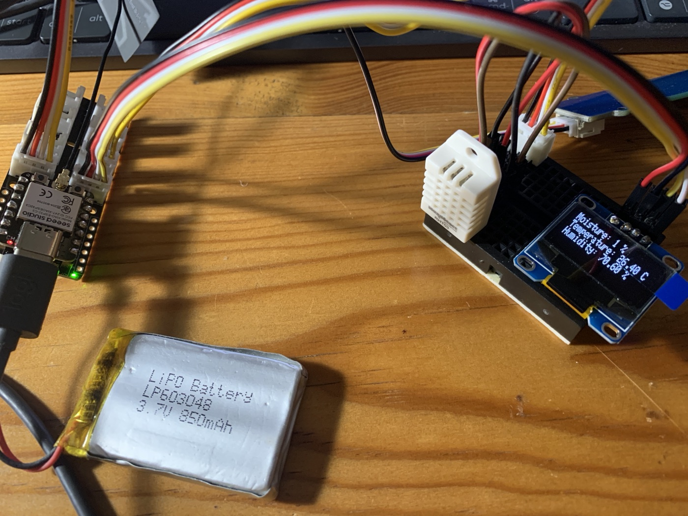
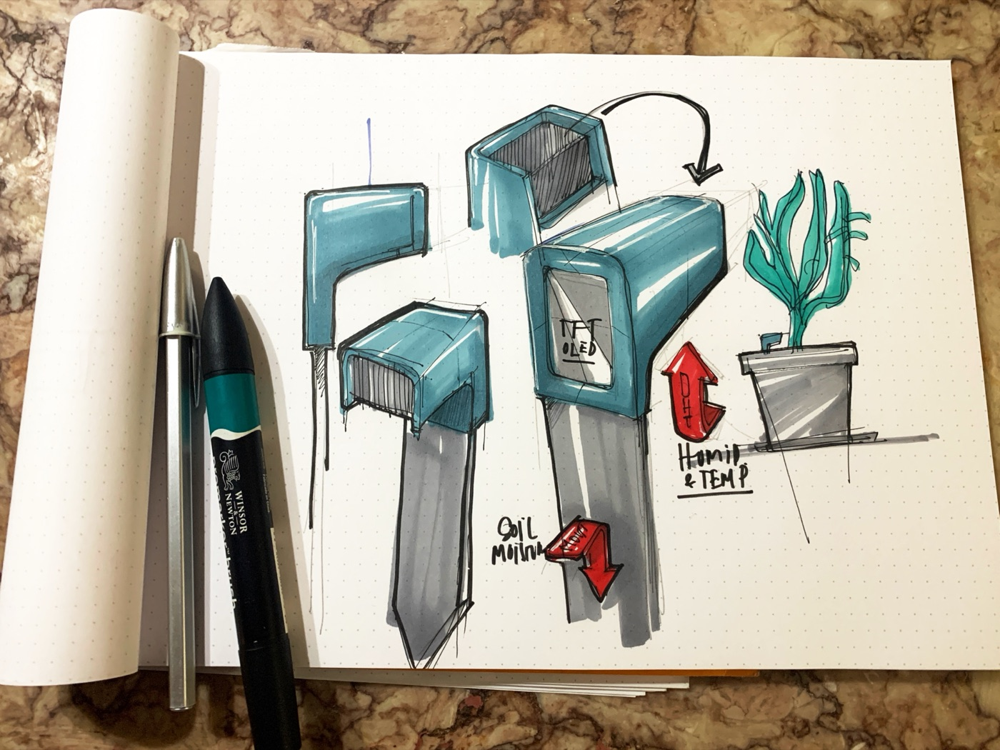

GROUU's basic node for local sensing: an ESP32 that reads a sensor and publishes JSON over WiFi + MQTT, with reconnect logic and over-the-air updates. A complete, forkable firmware template — the learning module the water and climate nodes build on.

The basic node is the completed, replicable starting point of GROUU: an ESP32 that reads a sensor and publishes JSON over WiFi + MQTT to the shared stack, reconnecting on its own and updatable over the air. In the research process it is the foundational learning module the water and climate nodes extend.
Sense → publish over WiFi / MQTT → the shared stack picks it up.
The node is a convention as much as code: each node is named by the GROUU scheme, and its MQTT topics derive automatically — so a fleet stays organised and any node's data is addressable without per-node wiring.
Runs on a stock ESP32 dev board — no custom PCB. Breadboard-simple: an MCU, a sensor and a pull-up.
| Part | Role | Source |
|---|---|---|
| ESP32 dev board | MCU + WiFi (the PlatformIO env targets a XIAO ESP32-C3) | — |
| DHT22 (AM2302) | Temperature + humidity (factory-calibrated, no user cal), data on pin D7 | — |
| 4.7k–10k pull-up | On the DHT data line | — |
| MQTT broker | Any — e.g. the GROUU Stack | Server Stack |
One PlatformIO/Arduino project: join WiFi with auto-reconnect, read the DHT22, publish {"t2":x,"h2":x} every 3 s, and stay updatable over the air. Libraries: WiFi, Adafruit_Sensor + DHT, ArduinoJson, PubSubClient, ArduinoOTA.
src/main.cpp — read the DHT22, publish JSON over MQTT
void publishValues() {
JsonDocument doc;
char output[80];
float newT = dht.readTemperature();
float newH = dht.readHumidity();
if (isnan(newT)) {
Serial.println("Failed to read from DHT sensor!");
} else {
doc["t2"] = newT;
doc["h2"] = newH;
serializeJson(doc, output);
client.publish(MQTT_room_sensors_PUBLISH_TOPIC.c_str(), output);
}
}
This node is complete as a firmware template. To reuse it: clone, configure, flash, point it at a broker.
Pull the basic-node folder from the repo.
Set installation, WiFi and broker; wire the DHT22.
Build & upload with PlatformIO.
Any MQTT broker — e.g. the GROUU Stack.
